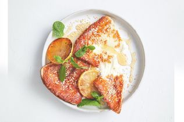
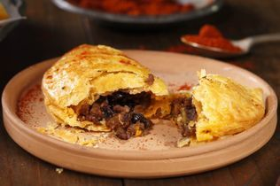
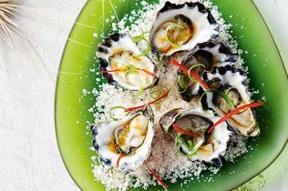

Importance of starters
The starters always the first course of a meal. Nowadays, the starter is often the first course of a meal, served directly before the main course. ... They consist of a varied assortment of hot or cold food served at the beginning of the meal, to stimulate the appetite, without being too rich.


